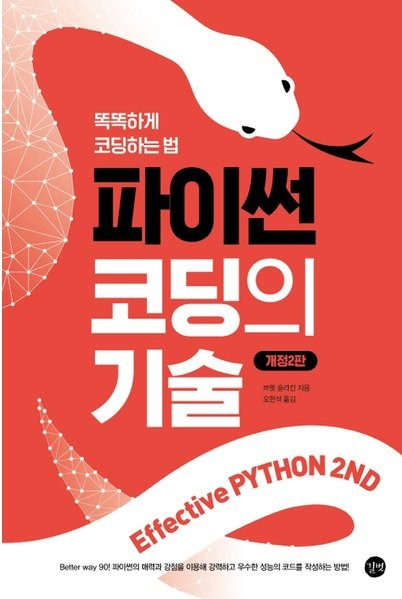

- 책 파이선 코딩의 기술을 읽고 정리한 내용입니다.

{kind=link}
1장. 파이썬 답게 생각하기
1. 사용중인 파이썬의 버전을 알아두라
1
python3 --version
2. PEP 8 스타일 가이드를 따르라
딕셔너리에서 키와 코론 사이에 공백을 넣지 않고, 콜론과 값 사이에 스페이스를 하나 넣는다.
함수, 변수, 애트리뷰트는 lowercase_underscore
비공개 인스턴스 애트리뷰트는 __lowercase_underscore
클래스는 CapitalizedWord
상수는 ALL_CAPS
모듈을 임포트할 때 절대경로를 사용
1
if not something: #if len(something) == 0: 대신
3. bytes와 str의 차이를 알아두라
- 파일을 불러와 읽고 쓸 때도 구별해야 함
1 2 3 4
a = b'h\x65llo' b = 'a\u0300 propos' c = a.decode() d = b.encode()
4. C 스타일 형식 문자열을 str.format과 쓰기보다는 f-문자열을 통한 인터폴레이션을 사용하라
1
2
3
4
5
f_string = f'{key:<10} = {value:.2f}'
c_tuple = '%-10s = %.2f' % (key, value)
c_dict = '%(key)-10s = %(value).2f' % {'key': key, 'value': value}
str_args = '{:<10} = {:.2f}'.format(key, value)
str_kw = '{key:<10} = {value:.2f}'.format(key=key, value=value)
5. 복잡한 식을 쓰는 대신 도우미 함수를 작성하라
식이 복잡해지면 식을 더 작은 조각으로 나눠서 로직을 도우미 함수로 옴길 지 고려해야 한다.
코드를 줄여 쓰는 것보다 가독성을 좋게 하는 것이 더 가치 있다.
6. 인덱스를 사용하는 대신 대입을 사용해 데이터를 언팩킹하라
인덱스를 사용하는 대신 더 명확한 코드를 작성할 수 있다.
1
2
t = ('감자칩', 140)
name, value = t
7. range보다는 enumerate를 사용하라
enumerate를 통해 for문에서 더 간단하게 언패킹할 수 있다.
8. 여러 이터레이터에 대해 나란히 루프를 수행하려면 zip를 사용하라
1
2
3
4
5
6
7
8
9
10
11
12
13
14
15
16
17
18
19
20
21
22
23
24
names = ['Cecilia', '남궁민수', '毛泽东']
counts = [len(n) for n in names]
print(counts)
longest_name = None
max_count = 0
for i in range(len(names)):
count = counts[i]
if count > max_count:
longest_name = names[i]
max_count = count
print(longest_name)
longest_name = None
max_count = 0
for name, count in zip(names, counts):
if count > max_count:
longest_name = name
max_count = count
print(longest_name)
zip()에 들어간 두 배열의 길이가 다를 경우 더 짧은 배열의 마지막 인덱스까지 값을 반환한다.
9. for 나 while 루프 뒤에 else 블록을 사용하지 말라
else블록은 루프가 정상적으로 끝까지 실행되었을 때 실행된다.
하지만 이는 루프의 의미를 복잡하게 만드므로 사용하지 말아야 한다.
10. 대입식을 사용해 반복을 피하라
대입식(assignment expression)을 통해 변수에 값을 대입함과 동시에 변수를 사용할 수 있다.
1
2
if (count := foo(something)) > 3:
print('do something')
또한 파이썬에 switch/case 가 없어서 코드가 복잡해지는 현상을 막을 수 있다.
1
2
3
4
5
6
7
8
9
10
11
12
13
14
15
16
17
18
19
20
21
22
23
if count >= 2:
pieces = slice_bananas(count)
to_enjoy = make_smoothies(pieces)
else:
count = fresh_fruit.get('사과', 0)
if count >= 4:
to_enjoy = make_cider(count)
else:
count = fresh_fruit.get('레몬', 0)
if count:
to_enjoy = make_lemonade(count)
else:
to_enjoy = '아무것도 없음'
if (count := fresh_fruit.get('바나나', 0)) >= 2:
pieces = slice_bananas(count)
to_enjoy = make_smoothies(pieces)
elif (count := fresh_fruit.get('사과', 0)) >= 4:
to_enjoy = make_cider(count)
elif count := fresh_fruit.get('레몬', 0):
to_enjoy = make_lemonade(count)
else:
to_enjoy = '아무것도 없음'
그리고 비슷한 방법으로 do/while 또한 대체할 수 있다.